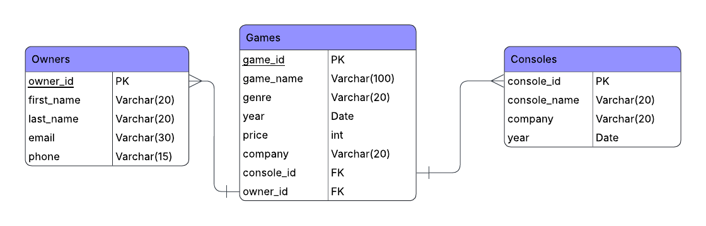

RetroMart is a peer-to-peer marketplace for buying and selling retro video games. Sellers can list games by console, set their price, and connect directly with buyers.
| Name | Role | Contributions |
|---|---|---|
| Hesham Rashid | Developer | Full site design and development, data model, Chart.js visualizations, Botpress integration |
| Savannah Day | Consistency Analyst | Ensuring web pages flow and are intuitive to user, as well as edits to website. |
| Zackary Zambrana | Customer Support | Addressing customer complaints and requests. Oversees marketplace interactions. |
| Gustavo Storck | Graphic Designer | In charge of UI and creating new graphics. Tests user experience. |
https://github.com/hrashid13/RetroMart
The RetroMart data model consists of three tables with two one-to-many relationships. A Console can have many Games, and an Owner can have many Games. The Games table holds foreign keys to both Consoles and Owners.
